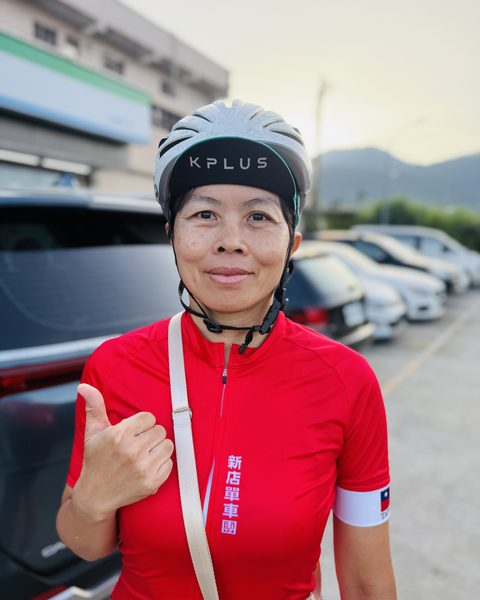
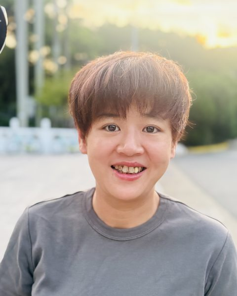
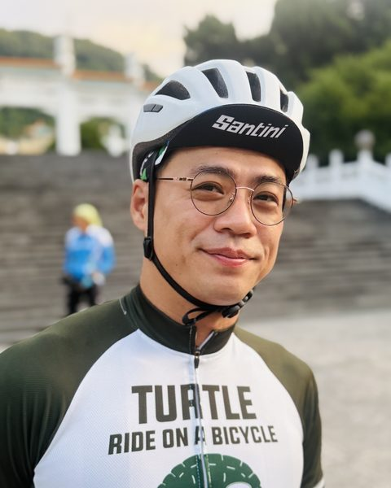
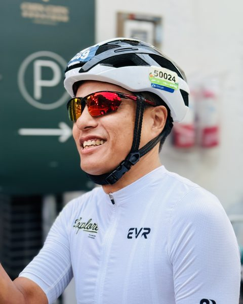
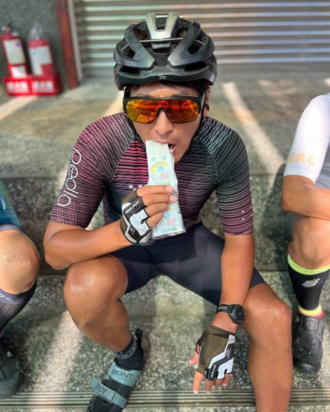
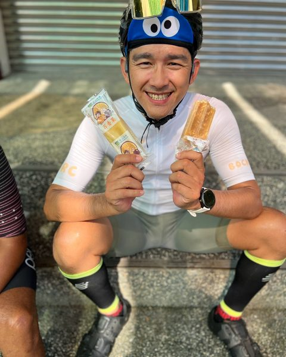
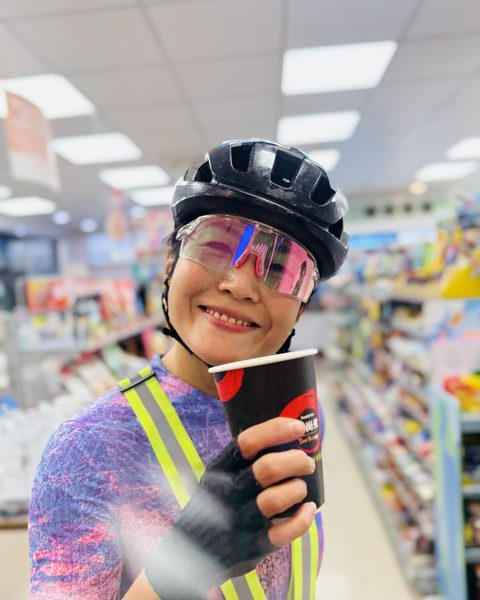
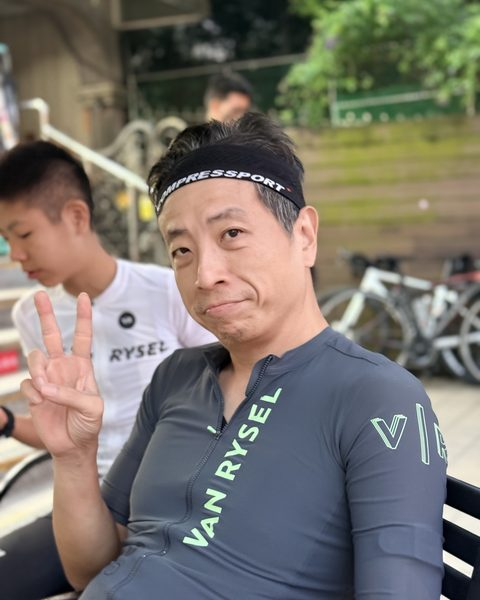
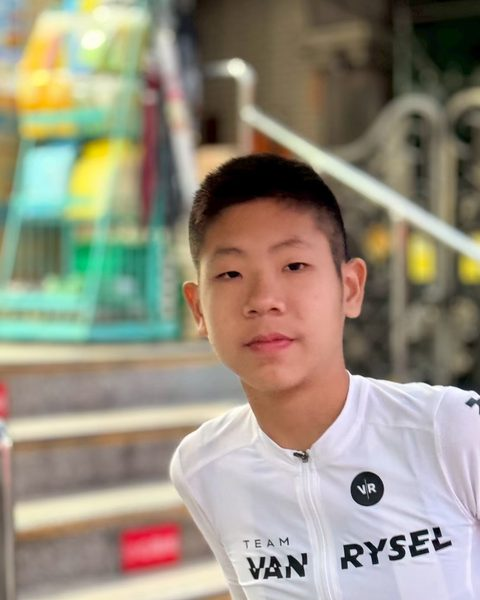
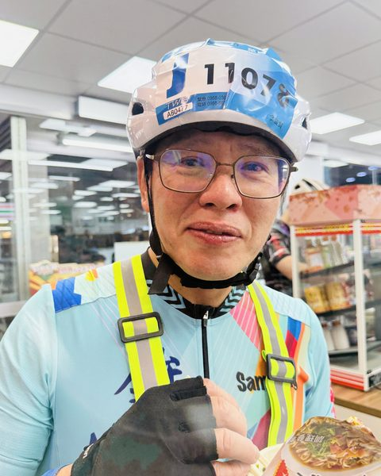

11/23
高海拔器官淨化行動｜2026 秋季員工旅遊
路線示意圖，非實際比例。紅線＝南投台21線（1、2 號車）；深色線＝嘉義台18線（3 號車）。
「純淨無污染的冷空氣吸到飽！內臟器官健康才是園區努力的目標！」
部分人員在單攻前一日（11/22）仍有高強度賽事，為確保全員順利抵達塔塔加，本次不包遊覽車，改採三台車分路接駁。
| 車次 | 車長（出發地） | 出發時間 | 乘客（上車地） | 上車順序 | 上山路線 | 夜間管制 |
|---|---|---|---|---|---|---|
| 1 號車 | 小宛（淡水） | 10:45 淡水出發 | 碗公（淡水） | 淡水 | 南投台21線 | 17:30 前通過草坪頭閘門 |
| 2 號車 | 千里馬（芝山） | 10:00 芝山出發 10:45 南港出發 | 阿旺、小旺、豆腐（南港） | 芝山 → 南港 | 南投台21線 | 17:30 前通過草坪頭閘門 |
| 3 號車 | Sam（林口） | 10:00 林口出發 11:30 新屋出發 | 首腦K、阿彬、阿彬哥（三人自行到林口）、順子（海鷗賽會場）、莎拉（嘉義高鐵站） | 林口 → 海鷗賽會場 → 高鐵嘉義站 | 嘉義台18線 | 無夜間封路管制 |
| 合計 12 人（2 + 4 + 6） | ||||||
標「估算」的車程是一般路況推估，不是即時導航。出發前請用 Google 地圖「指定出發時間」逐段驗證，並把實際結果回報，我再修正。
| 項目 | 方案 A｜自家車 | 方案 B｜9 人小巴＋小宛車 |
|---|---|---|
| 車輛 | 小宛車＋Sam 車＋千里馬車（3 台） | 9 人小巴＋小宛車（2 台） |
| 載客 | 小宛車 2 人／千里馬車 4 人／Sam 車 6 人 | 小巴 9 人／小宛車 3 人（小宛、碗公＋1 人，誰搭小宛車待定） |
| 基本費用 | 2,000 × 10 ＝ 20,000（已含住宿＋清潔 500） | 租車 24,000–26,000（2 天 1 夜） |
| 住宿＋清潔 | 已含在 2,000 內（500／人） | 500 × 10 ＝ 5,000 |
| 司機住宿補貼 | 千里馬、Sam 各 500 ＝ 1,000 | 500（1 位司機） |
| 入園申請費 | 免 | 免 |
| 10 人總額 | 20,000–21,000 | 29,500–31,500 |
| 每人 | 2,000–2,100 | 2,950–3,150 |
| B 比 A 多 | — | 每人 850–1,150 |
A 的區間差在司機補貼 1,000 是否已含在 2,000 內。B 未計小巴的油資、過路費、停車費，也未確認補貼是給包車司機或自駕者。上方各車時間表為方案 A；方案 B 的接人順序與時間尚未重排。









